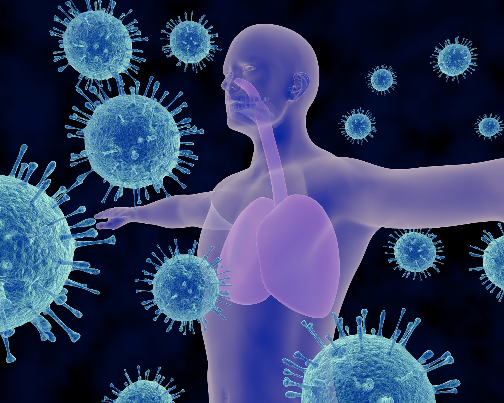
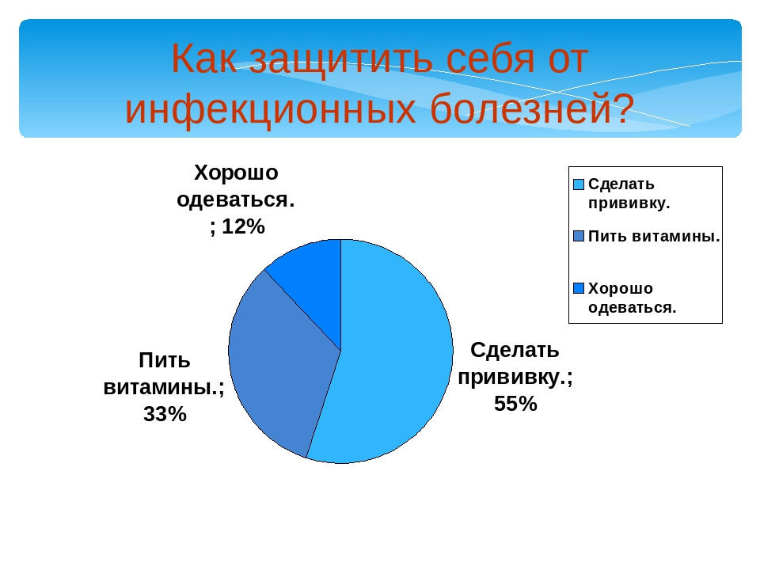
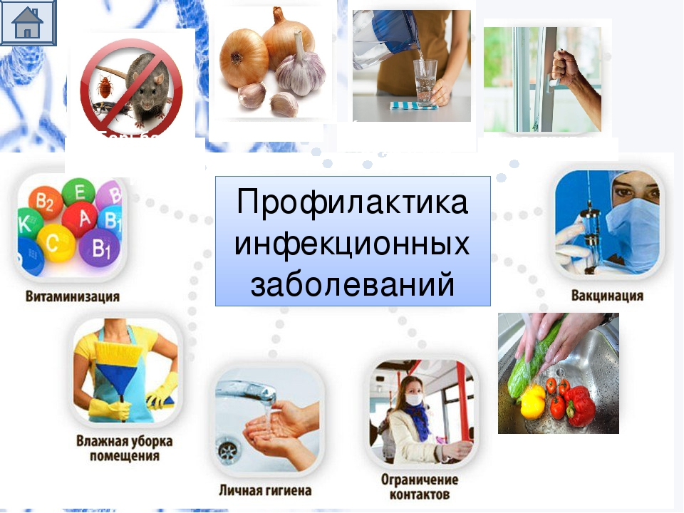

Инфекционные болезни-это группа заболеваний, которые вызываются проникновением в организм болезнетворных (патогенных) микроорганизмов. Чтобы патогенный микроб, попавший в организм, мог вызвать инфекционные болезни, он должен быть способен преодолевать сопротивляемость человеческого организма и оказывать на него токсическое действие.
Виды инфекционных болезней:
Малярия
Малярия сопровождается лихорадкой, ознобами, спленомегалией (увеличением размеров селезёнки), гепатомегалией (увеличением размеров печени), анемией. Характеризуется хроническим рецидивирующим течением.
Малярия вызывается укусом самки комаров рода Anopheles
Корь
По оценкам Всемирной организации здравоохранения, в 2018 году в мире от кори погибло около 140 тысяч человек, большинство из них — дети в возрасте до пяти лет
В России заболеваемость корью в 2018 году составила 1,7 случаев на 100 000 человек
Менингит
Воспаление оболочек головного мозга и спинного мозга. Различают лептоменингит — воспаление мягкой и паутинной мозговых оболочек, и пахименингит — воспаление твёрдой мозговой оболочки.
Наиболее часто встречающиеся симптомы менингита — головная боль, ригидность затылочных мышц одновременно с лихорадкой, изменённым состоянием сознания и чувствительностью к свету (фотофобией) или звуку.
Иногда, особенно у детей, могут быть только неспецифические симптомы, такие как раздражительность и сонливость

Для этого используется профилактика инфекционных заболеваний, которая позволяет предотвратить развитие инфекционного процесса.
Выделяют общественную и индивидуальную профилактику. Индивидуальная профилактика предусматривает:
прививки, закаливание, прогулки на свежем воздухе, занятия спортом, правильное питание, соблюдение правил личной гигиены, отказ от вредных привычек, быта и отдыха.
Вовремя делайте все прививки
Готовьте и храните пищу правильно
Путешествуйте с умом
Все фрукты и овощи перед употреблением в пищу нужно тщательно мыть. Такие нежные фрукты как виноград, ягоды, спелые персики и др.
можно ополаскивать в теплой воде с добавлением небольшого количества марганцовки (до розового цвета). Особенно внимательно относитесь к обработке сухофруктов и орехов, которые продаются без скорлупы,- они бывают источником многих кишечных инфекций,
в том числе полиомиелита.
Сухофрукты можно ошпарить кипятком или пропарить в течение 5-10 минут в духовке. Орехи удобно обжарить на сухой сковороде.

